GMAIL EN MI OUTLOOK EXPRESS
Hola amigos, esta vez explicaremos paso a paso como debemos configurar el OUTLOOK EXPRESS para tener alli nuestra cuenta de Google.
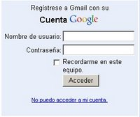
1.- Lo primero que tenemos que hacer es entrar a internet e ingresar a nuestra cuenta de GMAIL.
Colocaremos nuestro Nombre de usuario y password o contraseña, si la maquina donde estas es usada por mas de un usuario se recomienda no hacer check en la opción "Recordarme en este equipo" ya que si lo haces quedaran grabados tu usuario y password o contraseña en la maquina.
2 .-A continuacion hacemos click en
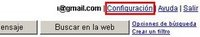
la opcion de "configuracion" que se encuentra en la parte superior derecha de tu correo, justo al lado de tu nombre de correo.3.- En la nueva ventana que nos saldrá,
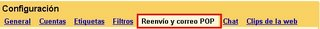
seleccionar "Reenvio y correo POP"
4.- En la segunda parte, donde dice "Descarga correo POP",
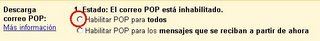
seleccionar: "Habilitar POP para todos", asi, todos tus correos, tantos los futuros, como los anteriores bajaran de inmediato a tu pc.Hasta aqui has configurado tu gmail para que acepte la configuracion que haras en el OUTLOOK EXPRESS, lo que queda ahora es configurar tu OUTLOOK EXPRESS.
5.- Abrir el Outlook Express:
Inicio \ Programas \ Outlook Express
Inicio \ Programas \ Outlook Express
6.- Te mostrara la siguiente pantalla, hacer click en "Cancelar"
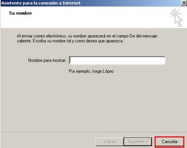
Despues de dar cancelar te pedira una confirmacion, a lo que responderas con "SI"
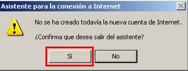
7.- Haz click en el menú "Herramientas" y selecciona "Cuentas".
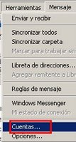
8.- Hacer click en "Agregar" y, a continuación, en "Correo".
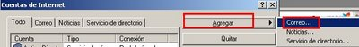
9.- Coloca tu nombre en el campo "Nombre para mostrar:" y haz clic en "Siguiente", en nombre para mostrar sera el nombre con el que quieres que reciban tus correos, es decir, si pones Andaluz (por ejemplo) tus contactos veran en sus bandejas de entradas: correo de Andaluz, cuando les envies un correo.
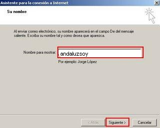
10.- A continuacion en "Dirección de correo electronico", coloca tu mail completo, por ejemplo: andaluzsoy1@gmail.com y haz click en "Siguiente".
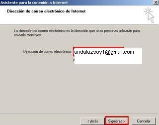
11.- Ahora escribe "pop.gmail.com" en el campo "Servidor de correo entrante (POP3, IMAP o HTTP)" y "smtp.gmail.com" en el campo "Servidor de correo saliente". tal como se muestra en la siguiente imagen y le das click a siguiente.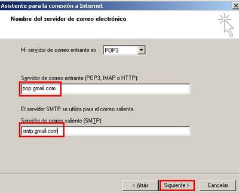
12.- Seguidamente pon correo completo incluyendo el @gmail.com en el campo "Nombre de cuenta:" y tu password o contraseña de Gmail en donde dice "Contraseña:" y haz click en "Siguiente".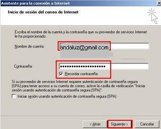
13.- En esta nueva pantalla haz click en "Finalizar".
YA FALTA POCO NO DESESPERES
14.- En esta nueva ventana seleccionar la pestaña "Todo", de alli "pop.gmail.com" y seguidamente en "Propiedades".
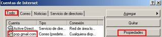
15.- Haz click en la pestaña "Opciones avanzada" alli configuraras lo siguiente:
Ponle check a las 2 casillas: "El servidor requiere una conexión segura (SSL)"
Ponle check a las 2 casillas: "El servidor requiere una conexión segura (SSL)"
En donde dice : "Correo saliente (SMPT)" escribiras 465 y en donde dice "Correo entrante (POP3)" veraz que automaticamente aparace 995.
16.- Ahora selecciona la pestaña "Servidores" y marca la casilla "Mi servidor requiere autenticación", luego "Aplicar" y "Aceptar"
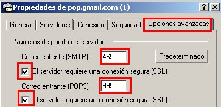
16.- Ahora selecciona la pestaña "Servidores" y marca la casilla "Mi servidor requiere autenticación", luego "Aplicar" y "Aceptar"
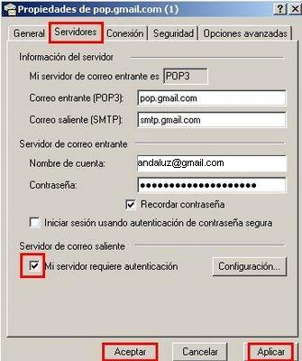
Hasta aqui termina la configuracion total de tu correo, ahora solo tienes que sincronizaro haciendo click en el boton "enviar y recibir".
Espero haberlos ayudado.-
Andaluzsoy